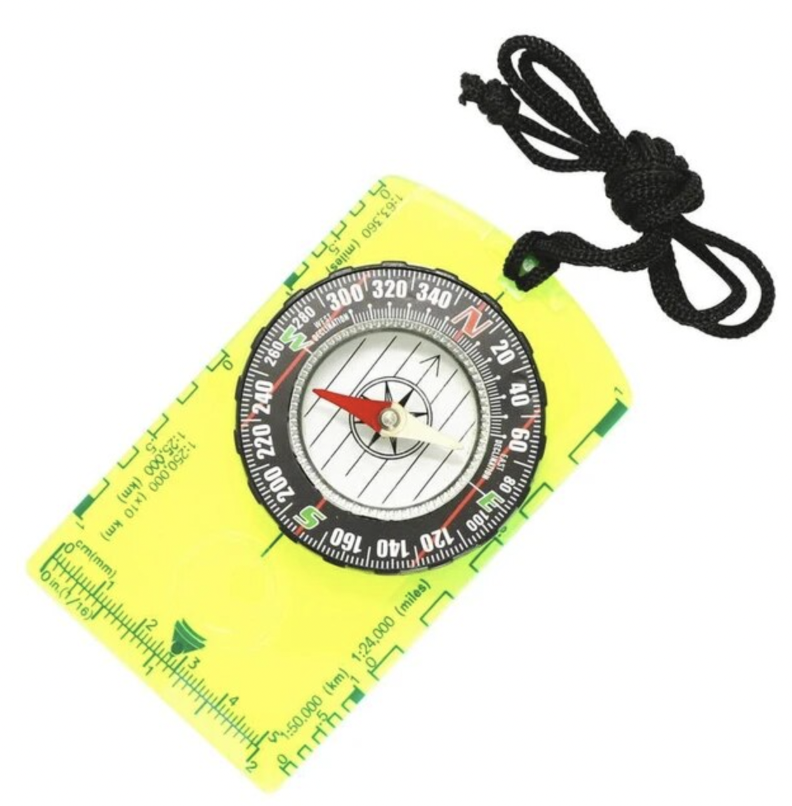

Homework 8 / GEOG456
Visualizing change with rasters
This series of pages shows change in Hadley, Massachusetts between 2012 and 2018. No significant changes were observed in the landscape between 2012 and 2018, apart from some minor tree cover loss and possible changes in the cultivated crops.